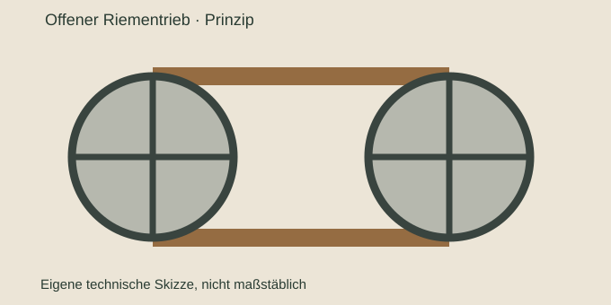
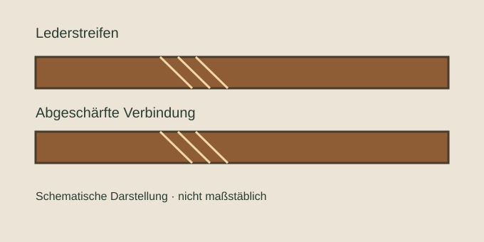
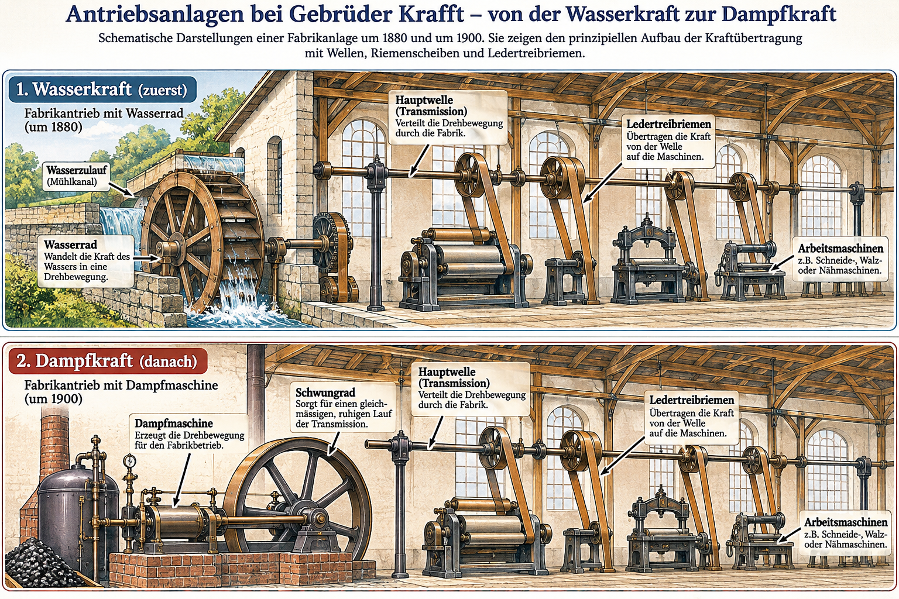

Einordnung
Diese Unterseite gehört zur Dokumentation der Ledertreibriemen um 1900. Der Schwerpunkt liegt auf historisch belegten Verfahren und Zusammenhängen.

Übertragung der Bewegung
Zwei Riemenscheiben sind durch einen umlaufenden Riemen verbunden.


Eigene schematische Abbildungen, keine Rekonstruktion einer konkreten Krafft-Maschine.
So funktionierte eine Fabriktransmission

Von der Wasserkraft zur Dampfkraft
Bevor elektrische Einzelantriebe in Fabriken und Werkstätten verbreitet waren, versorgten zentrale Kraftquellen zahlreiche Arbeitsmaschinen mit mechanischer Energie. Wasserräder nutzten die Bewegung des Wassers, um Wellen in Drehung zu versetzen. Über Zahnräder, Riemenscheiben und Treibriemen gelangte diese Bewegung zu den Maschinen.
Mit der Industrialisierung gewann die Dampfmaschine an Bedeutung. Sie ermöglichte den Betrieb auch unabhängig von einem unmittelbar verfügbaren Wasserantrieb, benötigte dafür jedoch Brennstoff, Wasser und eine eigene technische Infrastruktur. Der Wechsel der Kraftquelle machte die mechanische Kraftübertragung über Transmissionswellen und Ledertreibriemen nicht überflüssig.

Warum Ledertreibriemen wichtig blieben
Ob Wasserrad oder Dampfmaschine: Eine zentrale Antriebswelle konnte mehrere Arbeitsmaschinen gleichzeitig versorgen. Ledertreibriemen übertrugen die Drehbewegung von den Riemenscheiben der Transmission auf die jeweiligen Maschinen. Dafür waren eine geeignete Lederqualität, gleichmäßige Stärke, richtige Spannung und belastbare Verbindungen erforderlich.
Gebrüder Krafft in Fahrnau
Für Gebrüder Krafft ist die Nutzung von Wasserkraft vor dem späteren Einsatz von Dampfkraft belegt. Das Unternehmen stellte zudem selbst Ledertreibriemen her. Welche einzelnen Maschinen wann über welche Transmissionen angetrieben wurden, bleibt Gegenstand weiterer Quellenarbeit. Aus der allgemeinen Prinzipzeichnung lassen sich keine konkreten Einzelheiten der Krafft-Anlage ableiten.
Die Transmission
Eine Kraftquelle setzte eine Welle in Bewegung. Von dieser konnten mehrere Riemenscheiben über Treibriemen unterschiedliche Maschinen antreiben.
Riemen und Scheiben
Riemenbreite, Scheibendurchmesser, Drehzahl, Spannung und Anordnung beeinflussten die Kraftübertragung. Die richtige Auslegung war eine technische Aufgabe.
Betrieb und Wartung
Riemen mussten passend aufgelegt, kontrolliert und bei Bedarf nachgespannt oder repariert werden. Historische Handbücher behandeln diese Fragen ausführlich.